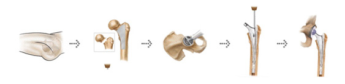
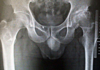
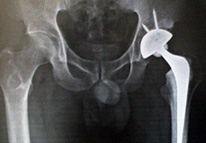

Artificial joint surgery for the hip joint
This type of surgery inserts an artificialhip joint made of special alloys and ceramics to reduce pain and make joint movements smootherto allow
patients to enjoy their daily life in cases where older people’s hip bones have been fracturedfrom slipping on rainy and icy surfaces or distortedfor
some other reason, or when ligaments in joints are worn out.
Artificial Hip Joint Surgery Procedure

-
- 
before surgery
- patients with worn out hip bones who
are incapable of walkingand are
expecting secondary complications
-
- 
after surgery
- hip replacement arthroplastry enables
patients to walk by themselves and
enjoy daily life
Cases calling for artificial joint surgery
- when daily life is affected by serious pain from a fractured hip bone, head of femur avascular hecrosis, hip degenerative arthritis, senior femur and
femoral neck fracture and trochanterc fractures of the femur
- whensocial and daily life are affected by hip bone pain
- whenhip bone pain is not eased by medication or sticks
- when the thehip bone is stiff and causes pain
- whenarthritiscauses severe pain that gradually grows after radiology inspection